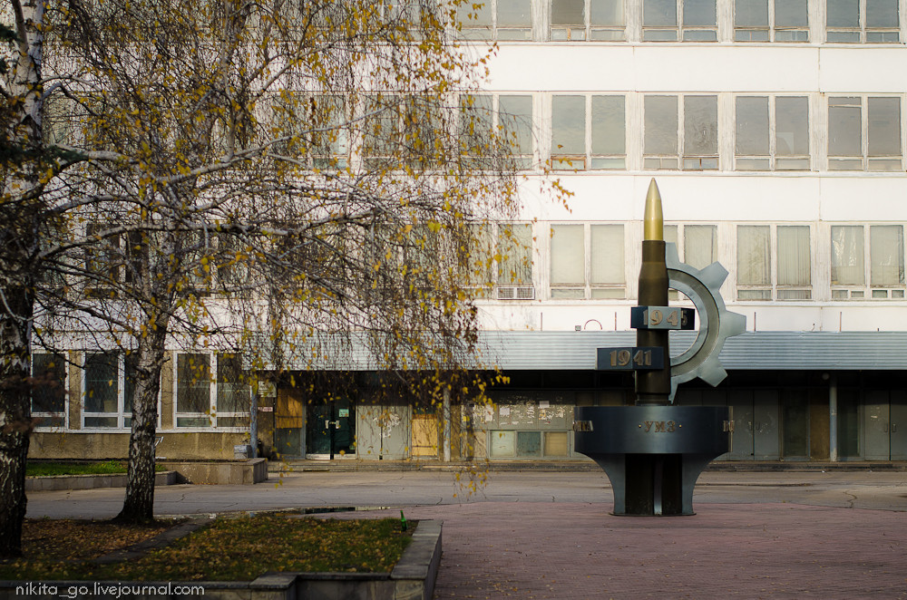
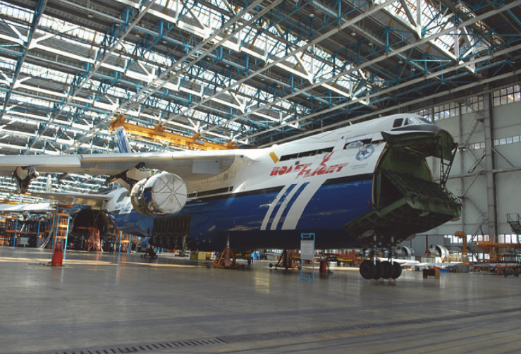
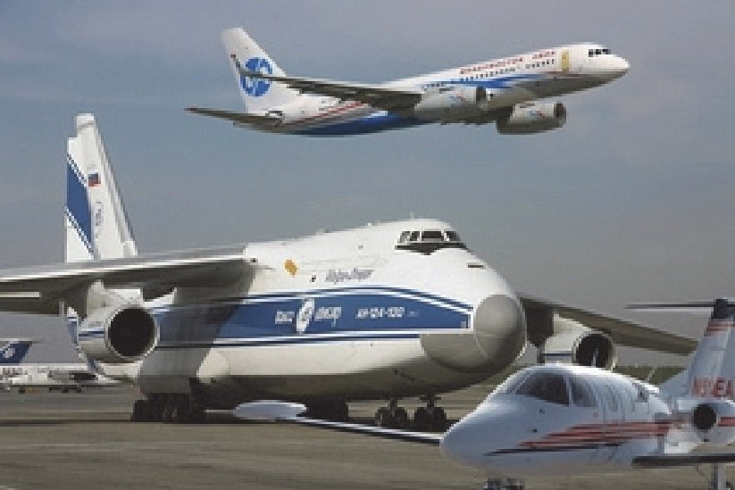

Достоинства в экономическом развитии
Ветряная электрическая станция в Ульяновской области
За последние годы в Ульяновске изменилось многое: построены километры дорог, построены новые школы и детские сады, спортивные комплексы, обустроены зоны отдыха для местного населения и гостей областной столицы. Кроме того, с каждым годом увеличивается количество муниципальных целевых программ, призванных решать вопросы в таких важных сферах, как образование и воспитание, медицина и социальная поддержка населения, безопасность и комфорт. Так, если в 2011 году действовало на территории муниципалитета 19 таких с финансированием более 770 млн рублей
Развитие экономики в Ульяновской области имеет множество положительных аспектов не только для общества, но в некотором роде и для природы. Например, в Ульяновске был реализован проект по установке ветровых генераторов, которые вырабатывают электричество в промышленных масштабах. Положительные аспекты заключаются в следующем:
-Это позволило реализовать поставку большего количества электроэнергии
-Этот способ получения электроэнергии более «чистый» по сравнению с другими и практически безвредный для окружающей среды
-Это привело к притоку денежных средств в регион, за счет поставок электричества и электроэнергии
С января 2018 г. ветряная электрическая станция (ВЭС) Fortum в Ульяновске включена в реестр мощности. ВЭС с установленной мощностью 35 мегаватт стала первым генерирующим объектом, который работает на основе использования энергии ветра на оптовом рынке электроэнергии и мощности (ОРЭМ). Ульяновская ВЭС будет получать гарантированные платежи за мощность по договору о предоставлении мощности (ДПМ) в течение 15 лет.

Новая ВЭС с установленной мощностью 35 мегаватт стала первым генерирующим объектом, функционирующим на основе использования энергии ветра, начавшим работу на оптовом рынке электроэнергии и мощности (ОРЭМ).
По итогам первого полугодия 2018 года Ульяновская ВЭС-1 выработала 48,6 млн кВт*ч чистой энергии. Коэффициент использования установленной мощности составил 32%. УВЭС-1 – в числе мировых лидеров по эффективности.
Экономический рывок
Так, отражением общего состояния экономики служат результаты деятельности предприятий и организаций, работающих на территории. За последние годы заметно преобразилась промышленная зона «Заволжье», на территории которой открыт уникальный в России индустриальный парк общей площадью 623 гектара. Здесь создано более 1000 новых рабочих мест. Осуществляется реализация 19 инвестиционных проектов российских и зарубежных компаний с объёмом инвестиций более 44,6 млрд рублей. Сюда же можно отнести и одно из последних масштабных экономических событий Ульяновска — открытие в минувшем 2017 году первого на территории России завода по производству шин для легковых автомобилей ООО «Бриджстоун ТайерМануфэкчуринг СНГ». Объем инвестиций этого проекта оценен в 18,9 млрд рублей. Ежегодно мощности завода готовы выпускать в продажу до 2 миллионов шин, а по мере восстановления рынка их число доведут до 4 миллионов единиц.
Появление новых заводов в промышленных зонах
Хотя появление множесва новых заводов и производств в промышленных зонах региона и пагубно повлияло на экологическую ситуацию в регионе, но тем не менее есть и преимущества.К этим преимуществам можно отнести сокращение безработицы в регионе за счет появления новых рабочих мест.Так же уменьшился отток специалистов из региона за счет того, что появились условия для работы: много рабочих мест; возросла заработная плата; хорошее трудоустройство и так далее.
Так же в регионе есть и иностранные предприятия, что обеспечивает региону приток новых специаистов и технологий.К таким предприятиям можно отнести построенный , относительно недавно, в 2016 году завод Bridgestone, который производит автомобильные шины
Появление множества компаний и производств, в том числе и иностранных, позволило нашему региону утвердиться на Российском и мировом рынках.Область получает иножество инвестиций для улучшения благосостояния производственного сектора.Постепенно ликвидируется безработица, растет заработная плата населения, увеличивается число технических специалистов.
Нельзя не упоминуть и об историческом значении появления в Ульяновске Патронного завода "УПЗ", перевезенного из Петербурга в годы войны в 1918 году.Он имел большое значение в годы гражданской и , особенно, в годы Великой Отечественной войны.С этого завода поставляли боеприпасы на фронт.

Ульяновск - авиационная столица России
«Ульяновск - авиационная столица России». Сегодня Ульяновск является крупнейшим центром российского гражданского авиастроения, научно-образовательным центром. Именно здесь создан авиационный кластер.
Авиакластер - уникальное образование. В нём объединены самолетостроительное производство, поставщики комплектующих, конструкторское бюро, два аэропорта, ряд авиакомпаний, сервисные и логистические службы, а также образовательные учреждения, готовящие весь спектр специалистов для авиации. Авиационный кластер является одним из высокотехнологичных секторов экономики Ульяновской области.
Производственный потенциал
Наиболее значимым промышленным объектом является ЗАО «Авиастар-СП», ставшее ядром сформированного авиационного кластера. 
Производственные мощности «Авиастар-СП»:
-
Развернутая площадь всех зданий- 1,4 млн м².
-
Площадь цехов- 680 тыс. м².
-
Объем производственных корпусов- 15 млн м³.
-
Списочная численность- 10 тыс. чел.
-
Оборудование- 5,2 тыс. ед.
Производство и техническое обслуживание авиатехники обеспечивают ведущие компании России - участники авиационного кластера:
ОАО «УТЁС» выпускает аэрометрическое оборудование для измерения высотно-скоростных параметров полёта, высотомеры третьего поколения ВБМ, системы воздушных сигналов, звездно-солнечные ориентаторы, информационные комплексы воздушных сигналов, системы обеспечения безопасности воздушных судов, контрольно-проверочную аппаратуру к ним и многое другое.
ОАО «УКБП» является ведущим предприятием авиаприборостроения РФ, деятельность которого основана на разработках, изготовлении и внедрении:
* систем электронной индикации и сигнализации ряда многофункциональных индикаторов и систем для наземной техники;
* интегрированных систем восприятия, измерения и вычисления воздушных параметров и лётных ограничений, в их составе приёмников и датчиков первичных аэрометрических данных;
* систем и элементов внутрикабинного освещения и светосигнализации, в том числе адаптированных для работы экипажа с очками ночного видения;
* наземных автоматизированных систем контроля и диагностики бортового оборудования.
На базе акционерных обществ «Утёс», «Ульяновское конструкторское бюро приборостроения» и «Авиаприбор-Холдинг» создано научно-производственное объединение «Авиаприбор-Симбирск». Это позволило приступить к освоению и серийному выпуску систем электронной индикации, лазерных гироскопов, акселерометров и др.
ЗАО «Аэрокомпозит» производит элементы и сборку крыльев, центропланов и хвостового оперения из композиционных материалов для самолетов SSJ-100 и МС-21.
ООО «Волга-Днепр Техникс Ульяновск» - организация технического обслуживания авиатехники российского и зарубежного производства.
Новая воздушная гавань
В новом своем статусе «международного» заработал аэровокзал имени Карамзина. Воздушные ворота города за последние годы преобразились до неузнаваемости, звание обязывает держать марку. Уже сегодня в эксплуатацию введена часть реконструированного здания аэровокзала с новой инфраструктурой. Работы по масштабной реконструкции воздушной гавани находятся уже на заключительном этапе. Пропускная способность аэропорта после открытия составит 240 пассажиров в час. Специалисты считают, что уже к 2030 году поток пассажиров увеличится до 1 млн человек в год. На реализацию уникального проекта потребовалось около 1,5 млрд рублей.
Ульяновск строится и растет
С 2013 года наблюдается тенденция ежегодного роста объёмов и темпов жилищного строительства. Если в 2013 году в городе вводили 344 тыс. кв. м, то к 2018-му этот показатель возрос почти на 65% и составил 564 тыс. кв. м.
Ведётся комплексное развитие территорий современного Ульяновска. Успешно развиваются новые микрорайоны «Искра», «Юга-Запад», «Запад-1», «Запад-2», «Восьмой Квартал», «Новая жизнь», «Север-1».
— Также, что немаловажно, постепенно замещается ветхое жилье современной застройкой с интересными архитектурными решениями и развитой инфраструктурой (образовательная, досуговая, деловая). Ключевыми стали мероприятия по реконструкции улиц и созданию интересных прогулочных зон, — делится своими впечатлениями инженер-строитель Виталий Синицын. – Более интересным стало и благоустройство придомовых территорий.
Ульяновцы сегодня активно включились в жилищный процесс, о чем говорят цифры: доля индивидуального жилья в общем объеме введенного в городе в минувшем 2017 году составила 64,1%, превысив показатели 2016 года более, чем на 20%. Все это стало возможным, в том числе и благодаря положительной динамике в основных показателях качества жизни городского населения: заработной плате и уровню безработицы.
Километры новых дорог
Еще одна важнейшая сфера для города – дороги. За минувшие годы достигнуто многое. В частности, уже сегодня можно говорить о стопроцентном охвате транспортным обслуживанием новых микрорайонов Ульяновска и пригородной зоны, ежегодно закупается новая техника для обсаживания дорожной сети города, устанавливаются дорожные знаки, светофоры, новые остановки, ремонтируются тротуары и улицы. Так, например, только в 2017 году при поддержке губернатора Сергея Морозова наш город стал участником федерального проекта «Безопасные и качественные дороги». Объем финансирования составил 1 миллиард 250 миллионов рублей. Благодаря этому удалось отремонтировать 37,5 км дорог. Кроме того, только за минувший год для повышения безопасности дорожного движения на 64 участках дорог смонтировали 10 600 погонных метров пешеходного барьерного ограждения, в соответствии с требованиями ГОСТ, привели в нормативное состояние 36 остановок общественного транспорта, обустроили 5 приподнятых островков безопасности. В соответствии с требованиями ГОСТ обустроили 35 остановок общественного транспорта. Получили 30 трамвайных вагонов 2001-2005 года выпуска из Москвы – 18 вагонов уже доставлены в Ульяновск, остальные привезут в ближайший месяц.
Мясоедов Максим Дмитриевич
Полувесов Артём Алексеевич